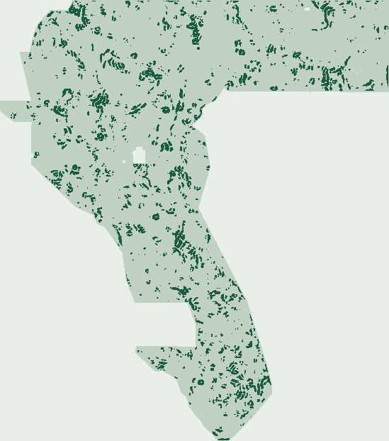

A new GeoTIFF.
An honest verdict.
Fresh geophysical predictions, automatically checked from the written bytes. The file is downloadable; the scientific and uniqueness gates do not clear it for a competition slot.
No human image inspection required. No prior submission copied. No leaderboard improvement claimed.
Magnetic–gravity residual
A new raster from pinned geophysical inputs. No prior submission used as a feature or starting point.
130,258 bytes · single band · float32 · EPSG:32611
Downloading does not authorize submission.
S15-SCGF E2: 0.240633 HOLDOUT-DTI · 0.097940 Blind SGMC — Download YES · Submit NO
137-feature Dual-Specialist Auto-Context (99-col provably B12/B19-invariant Pure-Subsurface specialist) · 44,000 binary {0,1} dots · all 12,279,160 float32 cells finite in [0,1] · EPSG:32611 · SHA-256 0893322792aa46eaebba…. NOT OK TO SUBMIT (trails S14-PTAC 0.267782 on holdout; literal 3-px lattice overlap 99.811%, vs 44.82% on GEMSDOE32 R0; 0 slots spent).
↓ Download S15-SCGF E2 GeoTIFF ↓ S15-SCGF ZIP Archive Full S15-SCGF Audit ↗ S15-SCGF Guide ↗ S15-SCGF Run Card ↗
95% CI [0.057510, 0.081676] · 60,988 withheld positives · gems57-pooled-hide-v2
Every cell finite in [0,1]. Different bytes do not establish protocol uniqueness.
Candidate experiments used. Duplicate stop honored; no further emission tuning. Zero competition uploads.
Submission readiness, without guesswork.
Read the machine audit ↗| Automatic gate | Verdict | Evidence / limitation |
|---|---|---|
| File format | PASS | Reopened TIFF and ZIP; no NaN/Inf, all values [0,1], one band, exact grid, zero outside footprint and on mapped faults. |
| Feature-alone canaries | PASS | 17 features/control fields × four held-out quadrants; maximum symmetric AUC 0.576053. Passing is not proof of no leakage. |
| Literal registry uniqueness | BLOCKED | All final dots fall within 3 px of a frozen registry lattice. The 70% rule fails. Two preplacement registry records were unavailable; no missing file was counted as a pass. |
| Assigned method lane | BLOCKED | The prompt omitted its promised single-method paragraph. This documented provisional lane cannot authorize a slot. |
| Scientific improvement | BLOCKED | No improvement established over the matched gravity-only control; no certified common-instrument current-best receipt. No score forecast. |
| Separate slot selection | BLOCKED | No selector approval or live weekly-cap receipt. No upload attempted; format validation cannot bypass other gates. |
Look for a density boundary
the magnetic field cannot explain.
We tested local gravity–pseudogravity residual edges using two pinned competition layers: reduced-to-pole magnetics and isostatic gravity. This targets a possible altered or concealed contact rather than relocating a previous submission’s dots.
An unaltered granite–carbonate contact, reversed-polarity lava, or survey seam could mimic the signature. These dots are not confirmed faults or geothermal vents.
0.069397 HOLDOUT-DTI
95% CI [0.057510, 0.081676] · 60,988 withheld positives · gems57-pooled-hide-v2
The matched gravity-only control performed better in the pooled estimate; the paired improvement interval includes zero. This hypothesis is a negative, not a reason to spend a slot.
Read the hypothesis & result →
Why the reported 0.2778 matters—and what it does not prove.
Read the forensic audit ↗The reference file is exactly its 40,199-dot base with 2,545 dots within 200 m of mapped faults removed. Under max-kernel DTI, removing low-credit unmatched mass can improve the metric. That is a plausible mechanism, not proof of the hidden-score cause.
0.2778 is user-reported, not ORGANIZER-CONFIRMED here. The pinned GEMSDOE32 page itself says no organizer score exists. Neither 0.4413 nor 0.3195 from the prompt is presented as a freshly verified leaderboard high.
File identity & short note
Fleet inventory, not score authentication.
91 of 92 repository pages fetched from pinned GitHub snapshots.
Refreshed 2026-10-25 03:58:07 UTC. Last published snapshot. Scheduled checks save a refreshed Actions artifact; daily feed auto-publication is not enabled in legacy Pages mode. This feed does not authenticate organizer scores.
Download source inventory CSV
Supplied results, labelled unverified
Exactly how a future cleared file is submitted